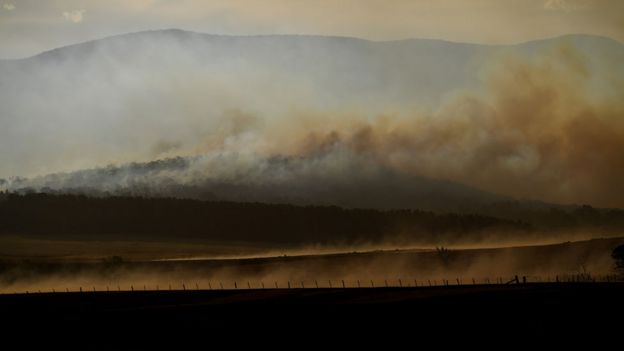

Koalas: Australia lists marsupial as endangered species
Australia has listed the koala as an endangered species across most of its east coast, after a dramatic decline in numbers.
The once-thriving marsupial has been ravaged by land clearing, bushfires, drought, disease and other threats.
The federal government said the listing was for Queensland, New South Wales and the Australian Capital Territory (ACT).
It has been urged to do more to protect koalas from rapidly diminishing habitats and climate change.
The species was listed as "vulnerable" in those states and territory only in 2012. Despite the rapid deterioration, governments have been accused of dithering.
"This listing adds priority when it comes to the conservation of the koala," Environment Minister Sussan Ley said on Friday.
She said officials were designing a recovery plan, and land development applications would now be assessed for impacts on the species.
Last year, a New South Wales inquiry found koalas would be extinct there by 2050 unless there was urgent action.
It estimated the Black Summer bushfires of 2019-20 had killed 5,000 koalas and affected 24% of habitats in New South Wales alone.
"Koalas have gone from no-listing to vulnerable to endangered within a decade. That is a shockingly fast declin." said conversation scientist Stuart Blanch from WWF-Australia.

Scientists warn that climate change will also exacerbate bushfires and drought, and reduce the quality of the animal's eucalyptus leaf diet.
Koalas are also found in South Australia and Victoria but their numbers are on the decline nationally, according to conservation groups.